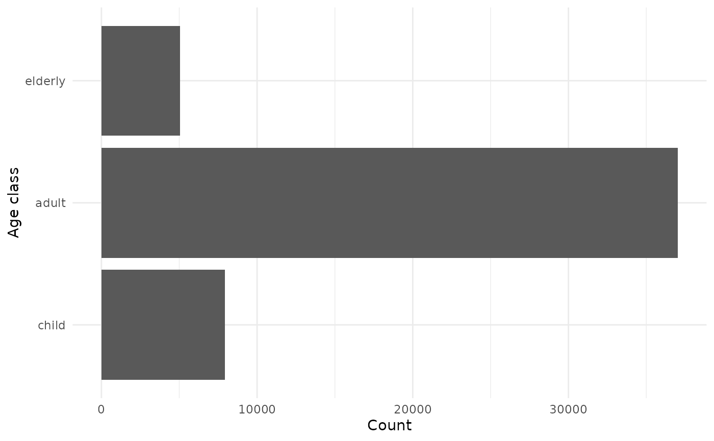
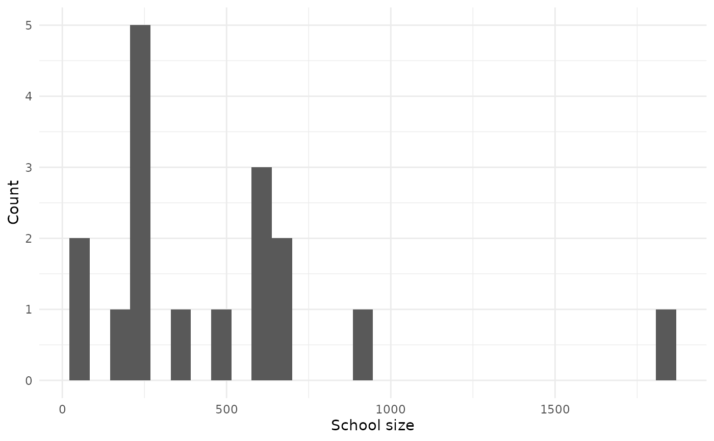
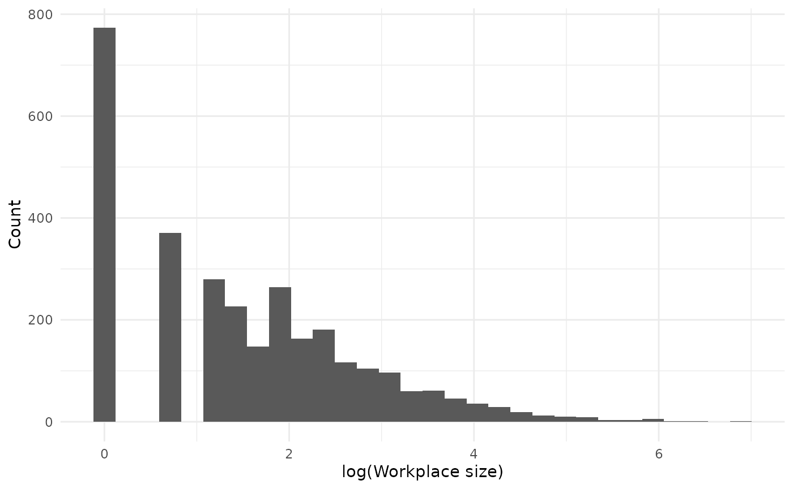
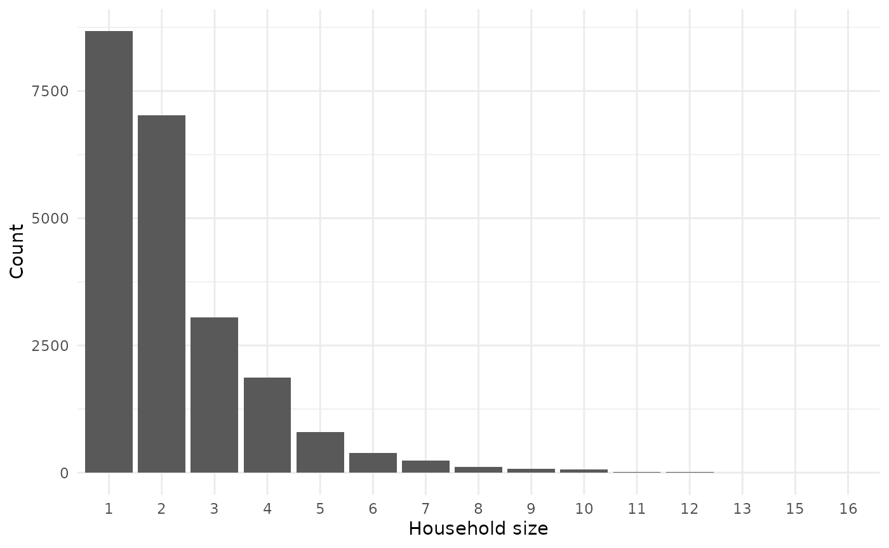
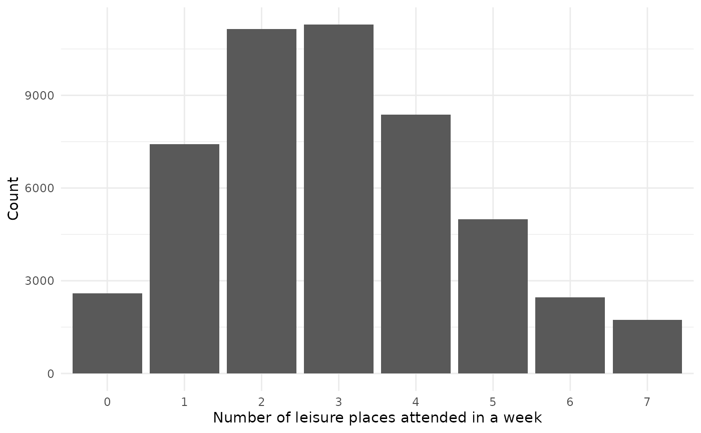
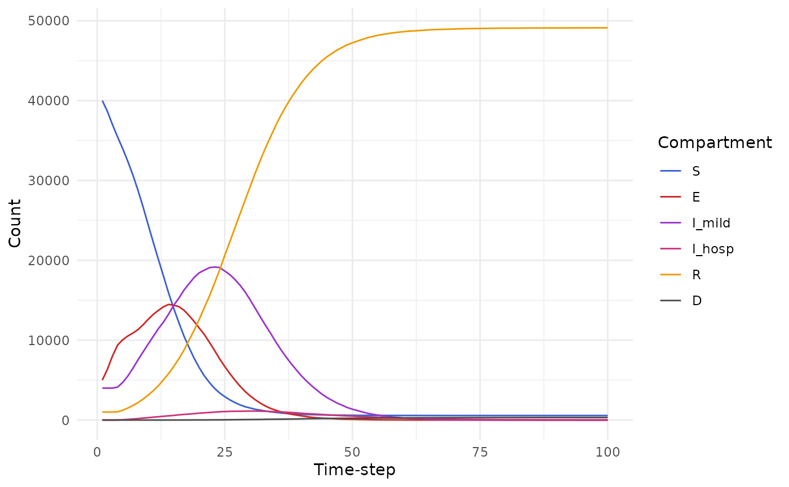

This vignette is not up to date with latest changes to the model!
Introduction
helios
is an R package which allows users to simulate the impact of far UVC
interventions in curtailing the spread of infectious disease
outbreaks.
This vignette serves to demonstrate basic use of the package. We start by loading the package, as well as other packages used in the vignette:
Parameters
First, we define some constant parameters to be used in the model. In
this vignette we use the default options, aside from the
human_population variable. To facilitate reproducibility,
we also set the seed for random number generation:
parameters_list <- get_parameters(list(human_population = 50000,
number_initial_S = 40000,
number_initial_E = 5000,
number_initial_I = 4000,
number_initial_R = 1000,
simulation_time = 50,
seed = 1))Every setting also needs an air changes per hour (ACH) value. Here we use a uniform baseline of 4 ACH in each setting:
for (setting in c("household", "workplace", "school", "leisure")) {
parameters_list <- set_default_ach(parameters_list, setting = setting, ach = 4)
}The names of all parameters are as follows:
names(parameters_list)
#> [1] "human_population"
#> [2] "initial_proportion_child"
#> [3] "initial_proportion_adult"
#> [4] "initial_proportion_elderly"
#> [5] "number_initial_S"
#> [6] "number_initial_E"
#> [7] "number_initial_I"
#> [8] "number_initial_R"
#> [9] "seed"
#> [10] "mean_household_size"
#> [11] "workplace_prop_max"
#> [12] "workplace_a"
#> [13] "workplace_c"
#> [14] "school_prop_max"
#> [15] "school_meanlog"
#> [16] "school_sdlog"
#> [17] "school_student_staff_ratio"
#> [18] "leisure_prob_visit"
#> [19] "leisure_mean_number_settings"
#> [20] "leisure_mean_size"
#> [21] "leisure_overdispersion_size"
#> [22] "leisure_prop_max"
#> [23] "duration_exposed"
#> [24] "duration_infectious"
#> [25] "beta_household"
#> [26] "beta_workplace"
#> [27] "beta_school"
#> [28] "beta_leisure"
#> [29] "beta_community"
#> [30] "time_varying_transmission_on"
#> [31] "dt"
#> [32] "simulation_time"
#> [33] "render_diagnostics"
#> [34] "household_distribution_country"
#> [35] "school_distribution_country"
#> [36] "workplace_distribution_country"
#> [37] "endemic_or_epidemic"
#> [38] "duration_immune"
#> [39] "prob_inf_external"
#> [40] "setting_specific_ach_workplace"
#> [41] "setting_specific_ach_workplace_mean"
#> [42] "setting_specific_ach_workplace_sd"
#> [43] "setting_specific_ach_school"
#> [44] "setting_specific_ach_school_mean"
#> [45] "setting_specific_ach_school_sd"
#> [46] "setting_specific_ach_leisure"
#> [47] "setting_specific_ach_leisure_mean"
#> [48] "setting_specific_ach_leisure_sd"
#> [49] "setting_specific_ach_household"
#> [50] "setting_specific_ach_household_mean"
#> [51] "setting_specific_ach_household_sd"
#> [52] "default_ach_workplace"
#> [53] "default_ach_school"
#> [54] "default_ach_leisure"
#> [55] "default_ach_household"
#> [56] "volume_per_person_workplace"
#> [57] "volume_per_person_school"
#> [58] "volume_per_person_leisure"
#> [59] "volume_per_person_household"
#> [60] "wells_riley_emission_rate"
#> [61] "wells_riley_decay_rate"
#> [62] "wells_riley_infection_prob_per_ffu"
#> [63] "wells_riley_respiratory_rate_factor"
#> [64] "wells_riley_time_in_room"
#> [65] "intervention_joint_active"
#> [66] "intervention_joint_list"
#> [67] "intervention_joint_coverage"
#> [68] "intervention_joint_coverage_target"
#> [69] "intervention_joint_coverage_type"
#> [70] "intervention_joint_timestep"
#> [71] "intervention_workplace_active"
#> [72] "intervention_workplace_list"
#> [73] "intervention_workplace_coverage"
#> [74] "intervention_workplace_coverage_target"
#> [75] "intervention_workplace_coverage_type"
#> [76] "intervention_workplace_timestep"
#> [77] "intervention_workplace_covered"
#> [78] "intervention_school_active"
#> [79] "intervention_school_list"
#> [80] "intervention_school_coverage"
#> [81] "intervention_school_coverage_target"
#> [82] "intervention_school_coverage_type"
#> [83] "intervention_school_timestep"
#> [84] "intervention_school_covered"
#> [85] "intervention_leisure_active"
#> [86] "intervention_leisure_list"
#> [87] "intervention_leisure_coverage"
#> [88] "intervention_leisure_coverage_target"
#> [89] "intervention_leisure_coverage_type"
#> [90] "intervention_leisure_timestep"
#> [91] "intervention_leisure_covered"
#> [92] "intervention_household_active"
#> [93] "intervention_household_list"
#> [94] "intervention_household_coverage"
#> [95] "intervention_household_coverage_target"
#> [96] "intervention_household_coverage_type"
#> [97] "intervention_household_timestep"
#> [98] "intervention_household_covered"
#> [99] "size_per_individual_workplace"
#> [100] "size_per_individual_school"
#> [101] "size_per_individual_leisure"
#> [102] "size_per_individual_household"
#> [103] "prob_hosp_child"
#> [104] "prob_hosp_adult"
#> [105] "prob_hosp_elderly"
#> [106] "prob_death_hosp_child"
#> [107] "prob_death_hosp_adult"
#> [108] "prob_death_hosp_elderly"
#> [109] "duration_hospitalized"Variables
Next, we define the model variables:
variables_list <- create_variables(parameters_list)
variables_list <- variables_list$variables_list
names(variables_list)
#> [1] "disease_state" "age_class" "workplace" "school"
#> [5] "household" "leisure" "specific_leisure"Aside from leisure, each entry of
variables_list is of the CategoricalVariable
class:
map(variables_list, class)
#> $disease_state
#> [1] "CategoricalVariable" "R6"
#>
#> $age_class
#> [1] "CategoricalVariable" "R6"
#>
#> $workplace
#> [1] "CategoricalVariable" "R6"
#>
#> $school
#> [1] "CategoricalVariable" "R6"
#>
#> $household
#> [1] "CategoricalVariable" "R6"
#>
#> $leisure
#> [1] "RaggedInteger" "R6"
#>
#> $specific_leisure
#> [1] "CategoricalVariable" "R6"The leisure variable is a RagggedInteger
allowing its elements to have different lengths.
Some variables change over time (disease_state,
leisure, specific_leisure), while other remain
fixed (age_class, workplace,
school, household).
Disease states
The outbreak is implemented as individual-level SEIR compartmental model.
(disease_states <- variables_list$disease_state$get_categories())
#> [1] "S" "E" "I_mild" "I_hosp" "R" "D"The number of individuals initially exposed is controlled by
parameters_list$number_initial_E and
parameters_list$number_initial_I
parameters_list$number_initial_E
#> [1] 5000
parameters_list$number_initial_I
#> [1] 4000Initially, all other individuals are placed into the susceptible disease state:
disease_state_counts <- purrr::map_vec(disease_states, function(x) variables_list$disease_state$get_size_of(values = x))
data.frame("State" = disease_states, "Count" = disease_state_counts) |>
gt::gt()| State | Count |
|---|---|
| S | 40000 |
| E | 5000 |
| I_mild | 4000 |
| I_hosp | 0 |
| R | 1000 |
| D | 0 |
Age classes
There are three age classes: children, adults, and the elderly. The age of each individual remains fixed throughout the simulation.
parameters_list[c("initial_proportion_child", "initial_proportion_adult", "initial_proportion_elderly")]
#> $initial_proportion_child
#> [1] 0.2
#>
#> $initial_proportion_adult
#> [1] 0.6
#>
#> $initial_proportion_elderly
#> [1] 0.2
age_classes <- variables_list$age_class$get_categories()
age_class_counts <- purrr::map_vec(age_classes, function(x) variables_list$age_class$get_size_of(values = x))
data.frame(age_classes, age_class_counts) |>
mutate(age_classes = forcats::fct_relevel(age_classes, "child", "adult", "elderly")) |>
ggplot(aes(x = age_classes, y = age_class_counts)) +
geom_col() +
labs(x = "Age class", y = "Count") +
coord_flip()
Schools
Each child attends a fixed school. Additionally, a small number of adults attend schools as staff:
schools <- variables_list$school$get_categories()
schools <- schools[schools != "0"]
school_sizes <- purrr::map_vec(schools, function(x) variables_list$school$get_size_of(values = x))
data.frame(school_sizes) |>
ggplot(aes(x = school_sizes)) +
geom_histogram() +
labs(x = "School size", y = "Count")
#> `stat_bin()` using `bins = 30`. Pick better value `binwidth`.
Workplaces
Each adult (aside from those who are school staff) attends a fixed workplace:
workplaces <- variables_list$workplace$get_categories()
workplaces <- workplaces[workplaces != "0"]
workplace_sizes <- purrr::map_vec(workplaces, function(x) variables_list$workplace$get_size_of(values = x))
data.frame(workplace_sizes) |>
ggplot(aes(x = log(workplace_sizes))) +
geom_histogram() +
labs(x = "log(Workplace size)", y = "Count")
#> `stat_bin()` using `bins = 30`. Pick better value `binwidth`.
Households
Children, adults and elderly people are grouped into fixed households:
households <- variables_list$household$get_categories()
household_sizes <- purrr::map_vec(households, function(x) variables_list$household$get_size_of(values = x))
table(household_sizes) |>
data.frame() |>
ggplot(aes(x = household_sizes, y = Freq)) +
geom_col() +
labs(x = "Household size", y = "Count")
The age distribution in households is as follows:
household_df <- purrr::map_df(households, function(x) {
indices <- variables_list$household$get_index_of(values = x)$to_vector()
if(length(indices > 0)) data.frame("individual" = indices, "household" = as.numeric(x))
})
age_classes <- variables_list$age_class$get_categories()
age_df <- purrr::map_df(age_classes, function(x) {
indices <- variables_list$age_class$get_index_of(values = x)$to_vector()
if(length(indices > 0)) data.frame("individual" = indices, "age_class" = x)
})
household_df |>
left_join(age_df, by = "individual") |>
group_by(household) |>
summarise(
child = sum(age_class == "child"),
adult = sum(age_class == "adult"),
elderly = sum(age_class == "elderly")
) |>
group_by(child, adult, elderly) |>
summarise(
count = n()
) |>
ungroup() |>
arrange(desc(count)) |>
head() |>
gt::gt()
#> `summarise()` has regrouped the output.
#> ℹ Summaries were computed grouped by child, adult, and elderly.
#> ℹ Output is grouped by child and adult.
#> ℹ Use `summarise(.groups = "drop_last")` to silence this message.
#> ℹ Use `summarise(.by = c(child, adult, elderly))` for per-operation grouping
#> (`?dplyr::dplyr_by`) instead.| child | adult | elderly | count |
|---|---|---|---|
| 0 | 1 | 0 | 7078 |
| 0 | 2 | 0 | 5250 |
| 0 | 0 | 1 | 1585 |
| 1 | 2 | 0 | 1337 |
| 0 | 3 | 0 | 1135 |
| 2 | 2 | 0 | 936 |
Leisure
Each week, individuals attend leisure venues:
leisure_places <- variables_list$leisure$get_values()
number_leisure_places <- sapply(leisure_places, function(x) sum(x > 0))
table(number_leisure_places) |>
data.frame() |>
ggplot(aes(x = number_leisure_places, y = Freq)) +
geom_col() +
labs(x = "Number of leisure places attended in a week", y = "Count")
Events
Events govern the transition of individuals between disease states:
events_list <- create_events(variables_list = variables_list, parameters_list = parameters_list)
names(events_list)
#> [1] "EI_mild_event" "EIhosp_event" "I_mild_R_event" "I_hosp_R_event"
#> [5] "I_hosp_D_event"Each event is in the TargetedEvent
class:
lapply(events_list, class)
#> $EI_mild_event
#> [1] "TargetedEvent" "EventBase" "R6"
#>
#> $EIhosp_event
#> [1] "TargetedEvent" "EventBase" "R6"
#>
#> $I_mild_R_event
#> [1] "TargetedEvent" "EventBase" "R6"
#>
#> $I_hosp_R_event
#> [1] "TargetedEvent" "EventBase" "R6"
#>
#> $I_hosp_D_event
#> [1] "TargetedEvent" "EventBase" "R6"Render
We use a fixed number of time-steps to simulate over:
timesteps <- round(parameters_list$simulation_time / parameters_list$dt)The object renderer is of class Render,
and stores output from the model at each timestep:
Processes
Processes enable queing of events:
variables_list <- create_variables(parameters_list)
parameters_list <- variables_list$parameters_list
variables_list <- variables_list$variables_list
events_list <- create_events(variables_list = variables_list, parameters_list = parameters_list)
timesteps <- round(parameters_list$simulation_time/parameters_list$dt)
renderer <- individual::Render$new(timesteps)
processes_list <- create_processes(
variables_list = variables_list,
events_list = events_list,
parameters_list = parameters_list,
renderer = renderer
)
names(processes_list)
#> [1] "SE_process" "EI_process" "I_mild_R_process"
#> [4] "I_hosp_exit_process" "renderer"Simulate
See individual::simulation_loop:
individual::simulation_loop(
variables = variables_list,
events = unlist(events_list),
processes = processes_list,
timesteps = timesteps,
)The output of the simulation is contained within
renderer, and can be accessed using the
to_dataframe() method:
states <- renderer$to_dataframe()
states |>
tidyr::pivot_longer(cols = ends_with("count"), names_to = "compartment", values_to = "value", names_pattern = "(.*)_count") |>
mutate(
compartment = forcats::fct_relevel(compartment, "S", "E", "I_mild", "I_hosp", "R", "D")
) |>
ggplot(aes(x = timestep, y = value, col = compartment)) +
geom_line() +
scale_color_manual(values = c("royalblue3", "firebrick3", "darkorchid3", "violetred3", "orange2", "grey30")) +
labs(x = "Time-step", y = "Count", col = "Compartment")